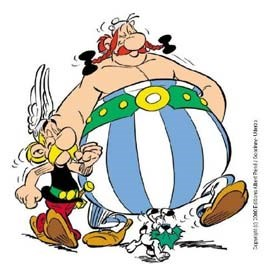

Europa
De romeinen hadden overal vijanden.
In dit stuk gaan we het vooral hebben over de vijanden in Europa.
Gallië
Één van de meest bekenste vijanden van Rome was Gallië.
Zo is er ook een strip over hun tijdens de veldtochten van Julius Ceasar.
Asterix en Obelix.

Gallië zelf was een land dat in het huidige frankrijk lag.
Het waren barbaarse volkeren volgens de romeinen.
Hoewel de galliërs inderdaad in aparte stammen woonden,
werden ze allemaal door dezelfde leider geleid.
Nadat Julius Ceasar's veldtocht door Gallië was begonnen,
Boden de galliërs weinig weerstand.
Dit veranderde echter later, toen Vercingetorix aan de macht kwam.
Hij werd toch verslagen in de slag om Alesie en Gallië werd een onderdeel van het Romeinse Rijk.
Kelten van Engeland
De kelten in Engeland en schotland, Albion genoemd door de romeinen, waren een grote uitdaging voor de romeinen.
Nadat Julius Ceasar als eerste romein voet had gezet op Albion,
werd hij meteen verdreven door een grote groep krijgers.
Later keerde Ceasar echter terug en stichtte de kolonie: Londinium.
Hoewel er verschillende stammen in Albion leefde,
lukte het de romeinen om het grootste deel van huidig engeland te veroveren
Het lukte echter niet om het noorden, huidig schotland, te veroveren.
De keizer Hadrianus liet hier dan ook een muur bouwen.
De muur van hadrianus staat er nu nog steeds en is een grote toeristen-attractie.
Ook was er een hele grote opstand in Albion.
Deze werd geleid onder Boudica, een vrouwlijke krijger.
Maar deze opstand werd door de romeinen neergeslagen en Boudica werd geëxecuteerd.